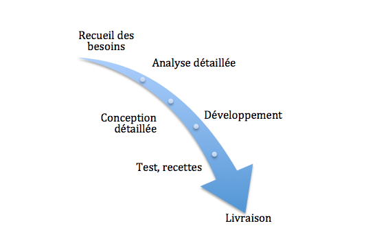

SCRUM
Méthode de gestion de projet
Modèle en cascade
Cycle en V

Et si on changeait ?
Manifeste agile
- 17 experts du dev
- 4 valeurs
- 12 principes
Valeurs
- L'équipe
- L'application
- La collaboration
- L'acceptation du changement
Principes
- Notre plus haute priorité est de satisfaire le client en livrant rapidement et régulièrement des fonctionnalités à grande valeur ajoutée.
- Accueillez positivement les changements de besoins, même tard dans le projet. Les processus agiles exploitent le changement pour donner un avantage compétitif au client.
- Livrez fréquemment un logiciel opérationnel avec des cycles de quelques semaines à quelques mois et une préférence pour les plus courts.
- Les utilisateurs ou leurs représentants et les développeurs doivent travailler ensemble quotidiennement tout au long du projet.
- Réalisez les projets avec des personnes motivées. Fournissez-leur l’environnement et le soutien dont ils ont besoin et faites-leur confiance pour atteindre les objectifs fixés.
- La méthode la plus simple et la plus efficace pour transmettre de l’information à l'équipe de développement et à l’intérieur de celle-ci est le dialogue en face à face.
- Un logiciel opérationnel est la principale mesure d’avancement.
- Les processus agiles encouragent un rythme de développement soutenable. Ensemble, les commanditaires, les développeurs et les utilisateurs devraient être capables de maintenir indéfiniment un rythme constant.
- Une attention continue à l'excellence technique et à une bonne conception renforce l’agilité.
- La simplicité – c’est-à-dire l’art de minimiser la quantité de travail inutile – est essentielle.
- Les meilleures architectures, spécifications et conceptions émergent d'équipes autoorganisées.
- À intervalles réguliers, l'équipe réfléchit aux moyens de devenir plus efficace, puis règle et modifie son comportement en conséquence.
Méthodes agile
- Scrum
- Kanbam
- eXtreme Programming
Scrum
Piliers de Scrum
- La transparence
- L'inspection
- L'adaptation
Client
- Je veux un site web
- Pas cher
- Pour demain?
Product Owner
- Expert métier
- Etablit la priorité des fonctionnalités à développer ou corriger
- Valide les fonctionnalités développées
- Joue le rôle du client
Scrum Master
- Faciliter les rituels Scrum
- Faciliter la comunication au sein de l'équipe
- Accroitre la productivité et le savoir faire de l'équipe
- Ecarter les éléments pouvant pertuber l'équipe
Equipe
- Entre 3 et 9 personnes
- Pluridisciplinaire et à toutes les compétences pour réaliser son projet
- Auto-organisé (décision prise ensemble)
Cycle agile
- Des itérations courtes (max 1 mois)
- Une séquence stricte (pas de chevauchement)
- Un rythme régulier (toujours la même durée)
Backlog
- Liste unique de choses à faire
- Priorisé
Release
- Livraison d'une version majeur
Sprint
- Max 1 mois par sprint
- Ne peut pas être modifié une fois commencer
- Livraison d'un incrément
User Story
- ID
- Nom
- Importance
- Estimation
- Demo
- Notes
User Story
Scrum au quotidien
Daily
Le matin autour d'un café
3 questions:
- Qu'as tu fais hier?
- Que vas tu faire auj?
- As-tu des problèmes
Sprint Planning
Meeting
- Inférieur à 8 heures
- Définir le sprint et son but
- Découper et estimer les différentes stories
Revue de Sprint
- Démo
- Max 4 heures
- Parties prenantes inclues
- Les taches partiellements finis ne sont pas présentés
Retrospective du Sprint
- Equipe, Scrum Master et Product Owner
- Max 3 heures
- Qu'est ce qui à bien marcher?
- Qu'est ce que l'on doit améliorer?
- Plan d'action pour le prochain Sprint